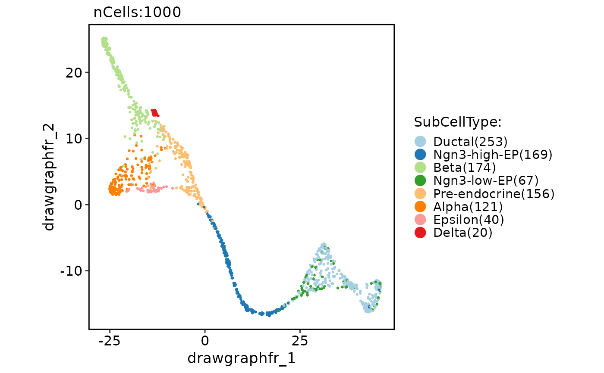
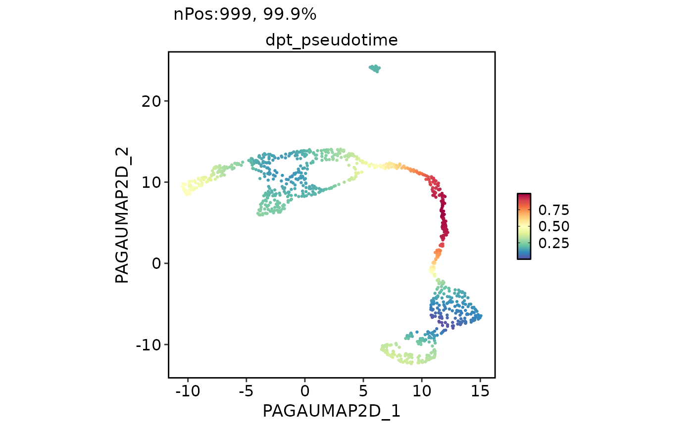
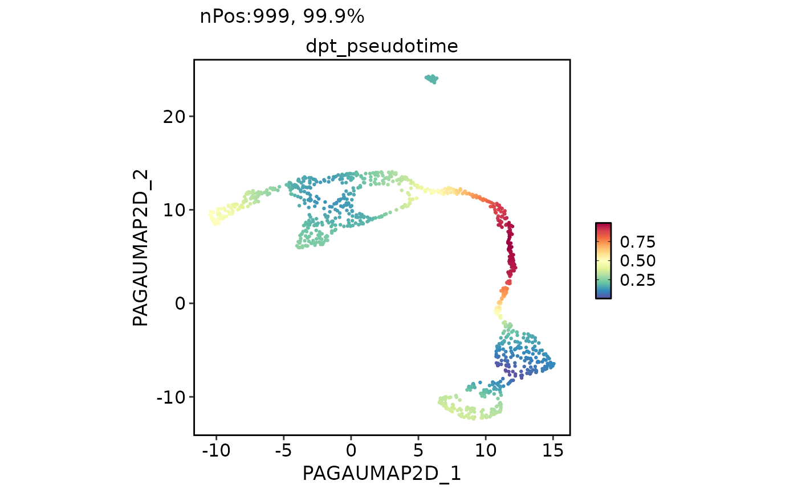

PAGA is a graph-based method used to infer cellular trajectories. This function runs the PAGA analysis on a Seurat object.
Usage
RunPAGA(
srt = NULL,
assay_x = "RNA",
layer_x = "counts",
assay_y = c("spliced", "unspliced"),
layer_y = "counts",
adata = NULL,
group_by = NULL,
linear_reduction = NULL,
nonlinear_reduction = NULL,
basis = NULL,
n_pcs = 30,
n_neighbors = 30,
use_rna_velocity = FALSE,
vkey = "stochastic",
embedded_with_PAGA = FALSE,
paga_layout = "fr",
threshold = 0.1,
point_size = 20,
infer_pseudotime = FALSE,
root_group = NULL,
root_cell = NULL,
n_dcs = 10,
n_branchings = 0,
min_group_size = 0.01,
palette = "Paired",
palcolor = NULL,
show_plot = TRUE,
save = FALSE,
dpi = 300,
dirpath = "./",
fileprefix = "",
return_seurat = !is.null(srt)
)Arguments
- srt
A Seurat object.
- assay_x
Assay to convert in the anndata object.
- layer_x
Layer name for
assay_xin the Seurat object.- assay_y
Assay to convert in the anndata object.
- layer_y
Layer names for the
assay_yin the Seurat object.- adata
An anndata object.
- group_by
Variable to use for grouping cells in the Seurat object.
- linear_reduction
Linear reduction method to use, e.g.,
"PCA".- nonlinear_reduction
Non-linear reduction method to use, e.g.,
"UMAP".- basis
The basis to use for reduction, e.g.,
"UMAP".- n_pcs
Number of principal components to use for linear reduction. Default is
30.- n_neighbors
Number of neighbors to use for constructing the KNN graph. Default is
30.- use_rna_velocity
Whether to use RNA velocity for PAGA analysis. Default is
FALSE.- vkey
The name of the RNA velocity data to use if
use_rna_velocityisTRUE. Default is"stochastic".- embedded_with_PAGA
Whether to embed data using PAGA layout. Default is
FALSE.- paga_layout
The layout for plotting PAGA graph. See layout param in
scanpy.pl.pagafunction.- threshold
The threshold for plotting PAGA graph. Edges for weights below this threshold will not be drawn.
- point_size
The point size for plotting.
- infer_pseudotime
Whether to infer pseudotime.
- root_group
The group to use as the root for pseudotime inference.
- root_cell
The cell to use as the root for pseudotime inference.
- n_dcs
The number of diffusion components to use for pseudotime inference.
- n_branchings
Number of branchings to detect.
- min_group_size
The minimum size of a group (as a fraction of the total number of cells) to consider it as a potential branching point.
- palette
The palette to use for coloring cells.
- palcolor
A vector of colors to use as the palette.
- show_plot
Whether to show the plot.
- save
Whether to save the plots.
- dpi
The DPI (dots per inch) for saving the plot.
- dirpath
The directory to save the plots.
- fileprefix
The file prefix to use for the plots.
- return_seurat
Whether to return a Seurat object instead of an anndata object. Default is
TRUE.
Examples
PrepareEnv()
#> ℹ [2025-08-20 08:57:03] Preparing scop Python Environment
#> ℹ [2025-08-20 08:57:03] Environment name: scop_env
#> ℹ [2025-08-20 08:57:03] Python version: 3.10-1
#> ℹ [2025-08-20 08:57:03] Number of packages to install: 21
#> ℹ [2025-08-20 08:57:03] Auto-detecting conda...
#> ℹ [2025-08-20 08:57:23] Creating conda environment with Python 3.10-1...
#> + /usr/share/miniconda/bin/conda create --yes --name scop_env 'python=3.10-1' pip setuptools wheel --quiet -c conda-forge
#> ✔ [2025-08-20 08:57:46] Environment created successfully: /usr/share/miniconda/envs/scop_env
#> ℹ [2025-08-20 08:57:46] Checking and installing required packages...
#> ℹ [2025-08-20 08:57:46] Installing conda packages
#> ℹ [2025-08-20 08:57:47] Try to install: leidenalg==0.10.2 and tbb==2022.2.0
#> ℹ [2025-08-20 08:57:47] Installing 2 packages into environment: scop_env
#> ℹ [2025-08-20 08:57:48] Installing packages via conda...
#> ℹ [2025-08-20 08:57:48] Using channel: "conda-forge"
#> ℹ [2025-08-20 08:57:48] Installing 2 packages...
#> + /usr/share/miniconda/bin/conda 'install' '--yes' '--name' 'scop_env' '-c' 'conda-forge' 'leidenalg==0.10.2' 'tbb==2022.2.0'
#> ✔ [2025-08-20 08:57:56] conda installation completed successfully
#> ℹ [2025-08-20 08:57:56] Checking 2 packages in environment: scop_env
#> ℹ [2025-08-20 08:57:57] Retrieving package list for environment: scop_env
#> ℹ [2025-08-20 08:57:58] Found 48 packages installed
#> ✔ [2025-08-20 08:57:58] leidenalg 0.10.2
#> ✔ [2025-08-20 08:57:58] tbb 2022.2.0
#> ℹ [2025-08-20 08:57:58] Installing pip packages
#> ℹ [2025-08-20 08:57:58] Try to install: igraph==0.11.9, matplotlib==3.10.3, numba==0.59.1, llvmlite==0.42.0, numpy==1.26.4, palantir==1.4.1, pandas==2.0.3, scanpy==1.11.3, scikit-learn==1.7.0, scipy==1.15.3, scvelo==0.3.3, wot==1.0.8.post2, trimap==1.1.4, pacmap==0.8.0, phate==1.0.11, bbknn==1.6.0, scanorama==1.7.4, scvi-tools==1.2.1, and cellrank==2.0.7
#> ℹ [2025-08-20 08:57:58] Installing 20 packages into environment: scop_env
#> ℹ [2025-08-20 08:58:00] Installing packages via pip...
#> ✔ [2025-08-20 09:00:23] pip installation completed
#> ℹ [2025-08-20 09:00:24] Checking 19 packages in environment: scop_env
#> ℹ [2025-08-20 09:00:24] Retrieving package list for environment: scop_env
#> ℹ [2025-08-20 09:00:27] Found 194 packages installed
#> ! [2025-08-20 09:00:27] igraph found but version mismatch: installed 0.10.16, required 0.11.9
#> ✔ [2025-08-20 09:00:27] matplotlib 3.10.3
#> ✔ [2025-08-20 09:00:27] numba 0.59.1
#> ✔ [2025-08-20 09:00:27] llvmlite 0.42.0
#> ✔ [2025-08-20 09:00:27] numpy 1.26.4
#> ✔ [2025-08-20 09:00:27] palantir 1.4.1
#> ✔ [2025-08-20 09:00:27] pandas 2.0.3
#> ✔ [2025-08-20 09:00:27] scanpy 1.11.3
#> ✔ [2025-08-20 09:00:27] scikit-learn 1.7.0
#> ✔ [2025-08-20 09:00:27] scipy 1.15.3
#> ✔ [2025-08-20 09:00:27] scvelo 0.3.3
#> ✔ [2025-08-20 09:00:27] wot 1.0.8.post2
#> ✔ [2025-08-20 09:00:27] trimap 1.1.4
#> ✔ [2025-08-20 09:00:27] pacmap 0.8.0
#> ✔ [2025-08-20 09:00:27] phate 1.0.11
#> ✔ [2025-08-20 09:00:27] bbknn 1.6.0
#> ✔ [2025-08-20 09:00:27] scanorama 1.7.4
#> ✔ [2025-08-20 09:00:27] scvi-tools 1.2.1
#> ✔ [2025-08-20 09:00:27] cellrank 2.0.7
#> ! [2025-08-20 09:00:27] Failed to install: igraph==0.11.9 into the environment scop_env. Please install manually
#> ✔ [2025-08-20 09:00:31] Python Environment Ready
#> conda environment:
#> conda: /usr/share/miniconda/bin/conda
#> environment: /usr/share/miniconda/envs/scop_env
#> python config:
#> python: /usr/share/miniconda/envs/scop_env/bin/python3.10
#> libpython: /usr/share/miniconda/envs/scop_env/lib/libpython3.10.so
#> pythonhome: /usr/share/miniconda/envs/scop_env:/usr/share/miniconda/envs/scop_env
#> version: 3.10.1 | packaged by conda-forge | (main, Dec 22 2021, 01:39:36) [GCC 9.4.0]
#> numpy: /usr/share/miniconda/envs/scop_env/lib/python3.10/site-packages/numpy
#> numpy_version: 1.26.4
#>
#> NOTE: Python version was forced by use_python() function
data(pancreas_sub)
pancreas_sub <- RunPAGA(
srt = pancreas_sub,
assay_x = "RNA",
group_by = "SubCellType",
linear_reduction = "PCA",
nonlinear_reduction = "UMAP"
)
#> ℹ [2025-08-20 09:00:34] Checking 2 packages in environment: scop_env
#> ℹ [2025-08-20 09:00:35] Retrieving package list for environment: scop_env
#> ℹ [2025-08-20 09:00:37] Found 194 packages installed
#> ✔ [2025-08-20 09:00:37] scanpy version: 1.11.3
#> ✔ [2025-08-20 09:00:37] numpy version: 1.26.4
#> ℹ [2025-08-20 09:00:37] Converting <Seurat> object to <AnnData> object...
#> ! [2025-08-20 09:00:43] "misc" slot is not converted
#> ! [2025-08-20 09:00:43] "tools" slot is not converted
#> ✔ [2025-08-20 09:00:43] Convert <Seurat> object to <AnnData> object completed
#> ℹ [2025-08-20 09:00:43] Running PAGA analysis...
#> ✔ [2025-08-20 09:01:00] PAGA analysis completed
#> ℹ [2025-08-20 09:01:00] Converting <AnnData> object to <Seurat> object...
#> ✔ [2025-08-20 09:01:01] Convert <AnnData> object to <Seurat> object completed
CellDimPlot(
pancreas_sub,
group.by = "SubCellType",
reduction = "draw_graph_fr"
)
#> Warning: No shared levels found between `names(values)` of the manual scale and the
#> data's fill values.

PAGAPlot(pancreas_sub, reduction = "UMAP")
 CellDimPlot(
pancreas_sub,
group.by = "SubCellType",
reduction = "UMAP",
paga = pancreas_sub@misc$paga
)
#> Warning: No shared levels found between `names(values)` of the manual scale and the
#> data's fill values.
#> Warning: No shared levels found between `names(values)` of the manual scale and the
#> data's fill values.
CellDimPlot(
pancreas_sub,
group.by = "SubCellType",
reduction = "UMAP",
paga = pancreas_sub@misc$paga
)
#> Warning: No shared levels found between `names(values)` of the manual scale and the
#> data's fill values.
#> Warning: No shared levels found between `names(values)` of the manual scale and the
#> data's fill values.
 pancreas_sub <- RunPAGA(
srt = pancreas_sub,
group_by = "SubCellType",
linear_reduction = "PCA",
nonlinear_reduction = "UMAP",
embedded_with_PAGA = TRUE,
infer_pseudotime = TRUE,
root_group = "Ductal"
)
#> ℹ [2025-08-20 09:01:03] Checking 2 packages in environment: scop_env
#> ℹ [2025-08-20 09:01:03] Retrieving package list for environment: scop_env
#> ℹ [2025-08-20 09:01:05] Found 194 packages installed
#> ✔ [2025-08-20 09:01:05] scanpy version: 1.11.3
#> ✔ [2025-08-20 09:01:05] numpy version: 1.26.4
#> ℹ [2025-08-20 09:01:05] Converting <Seurat> object to <AnnData> object...
#> ! [2025-08-20 09:01:06] "misc" slot is not converted
#> ! [2025-08-20 09:01:06] "tools" slot is not converted
#> ✔ [2025-08-20 09:01:06] Convert <Seurat> object to <AnnData> object completed
#> ℹ [2025-08-20 09:01:06] Running PAGA analysis...
#> ✔ [2025-08-20 09:01:09] PAGA analysis completed
#> ℹ [2025-08-20 09:01:09] Converting <AnnData> object to <Seurat> object...
#> ✔ [2025-08-20 09:01:10] Convert <AnnData> object to <Seurat> object completed
FeatureDimPlot(
pancreas_sub,
features = "dpt_pseudotime",
reduction = "PAGAUMAP2D"
)

PAGAPlot(pancreas_sub, reduction = "PAGAUMAP2D")
CellDimPlot(
pancreas_sub,
group.by = "SubCellType",
reduction = "PAGAUMAP2D",
paga = pancreas_sub@misc$paga
)
#> Warning: No shared levels found between `names(values)` of the manual scale and the
#> data's fill values.
#> Warning: No shared levels found between `names(values)` of the manual scale and the
#> data's fill values.
pancreas_sub <- RunPAGA(
srt = pancreas_sub,
group_by = "SubCellType",
linear_reduction = "PCA",
nonlinear_reduction = "UMAP",
embedded_with_PAGA = TRUE,
infer_pseudotime = TRUE,
root_group = "Ductal"
)
#> ℹ [2025-08-20 09:01:03] Checking 2 packages in environment: scop_env
#> ℹ [2025-08-20 09:01:03] Retrieving package list for environment: scop_env
#> ℹ [2025-08-20 09:01:05] Found 194 packages installed
#> ✔ [2025-08-20 09:01:05] scanpy version: 1.11.3
#> ✔ [2025-08-20 09:01:05] numpy version: 1.26.4
#> ℹ [2025-08-20 09:01:05] Converting <Seurat> object to <AnnData> object...
#> ! [2025-08-20 09:01:06] "misc" slot is not converted
#> ! [2025-08-20 09:01:06] "tools" slot is not converted
#> ✔ [2025-08-20 09:01:06] Convert <Seurat> object to <AnnData> object completed
#> ℹ [2025-08-20 09:01:06] Running PAGA analysis...
#> ✔ [2025-08-20 09:01:09] PAGA analysis completed
#> ℹ [2025-08-20 09:01:09] Converting <AnnData> object to <Seurat> object...
#> ✔ [2025-08-20 09:01:10] Convert <AnnData> object to <Seurat> object completed
FeatureDimPlot(
pancreas_sub,
features = "dpt_pseudotime",
reduction = "PAGAUMAP2D"
)

PAGAPlot(pancreas_sub, reduction = "PAGAUMAP2D")
CellDimPlot(
pancreas_sub,
group.by = "SubCellType",
reduction = "PAGAUMAP2D",
paga = pancreas_sub@misc$paga
)
#> Warning: No shared levels found between `names(values)` of the manual scale and the
#> data's fill values.
#> Warning: No shared levels found between `names(values)` of the manual scale and the
#> data's fill values.